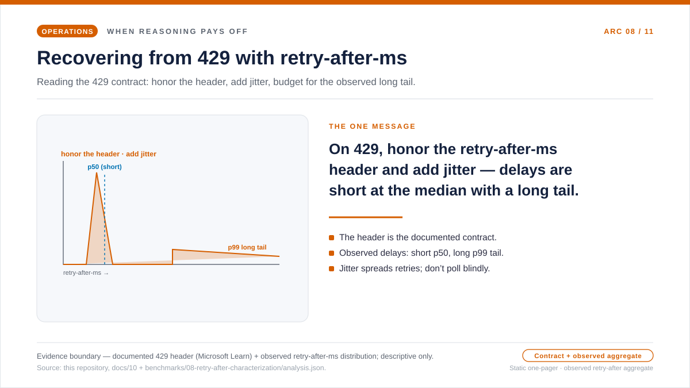
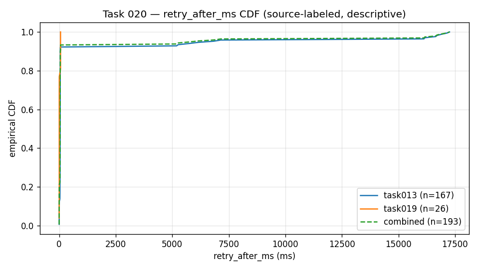

운영 에세이 · PTU 복구와 429 처리
429: 단순한 오류가 아닌 복구 신호
트래픽이 몰려 PTU 배포가 100% 사용률에 도달하면 호출이 429로 되돌아오기
시작합니다. 반사적으로 세 가지 동작 중 하나에 손이 갑니다. 용량이 비어
보일 때까지 헬스 체크 폴링 루프를 돌리거나, 고정된 타이머로 무작정
재시도하거나, 곧장 모든 요청을 다른 대상으로 돌리는 것입니다. 세 가지
모두 클라이언트가 언제 다시 시도해도 안전한지를 추측해야 한다고
전제합니다. 그렇지 않습니다 — 429는 그 답을 이미
retry-after-ms 헤더에 담아 돌려줍니다. 그래서 운영의 질문은
“호출이 실패했는가?”가 아니라 “다음 결정의 주체는 누구인가, 즉 기다릴지,
우회할지, 포기할지”입니다.
retry-after-ms 헤더가 입장 계약입니다.
헤더를 존중하고, 지터를 더하며, 관측된 긴 꼬리를 예산에 반영합니다. 이
한 장 요약은 그 단 하나의 메시지를 담고 근거 경계를 표시합니다. 헤더는
Microsoft Learn의 계약이고, 그 옆의 짧은 중앙값·긴 꼬리 형태는 이
저장소의 원천 실행에서 나온 정제된 공개 집계로, 서술용으로 제시합니다.
429 복구 한 장 요약 SVG 열기.

추측 대신 헤더를 읽는 이유
세 가지 반사 동작에는 한 가지 숨은 전제가 깔려 있습니다. 클라이언트가
용량이 언제 풀릴지 알 수 없으니, 떠보거나, 고정 간격으로 기다리거나,
떠나야 한다는 것입니다. 그 전제를 받아들이기 전에 두 가지를 나란히 놓아
볼 만합니다. 첫째는 Microsoft Learn이 문서화하는 내용입니다. 100%
사용률에서 서비스는 곧바로 429를 반환하고, 언제 다시 시도할지에 대한
서비스 제공 대기값인 retry-after-ms를 함께 붙입니다. 둘째는
이 저장소의 원천 실행에서 실제로 관측된 retry-after-ms 값을
정제한 공개 집계로, 그 권고된 대기가 실제로 어떤 모습이었는지를 보여
주려고 서술용으로 포함합니다. 둘을 함께 놓으면 “언제 다시 시도해도
안전한가?”는 클라이언트 쪽 추측에서 서비스가 돌려주는 값으로 바뀝니다.
잠시 멈춰 볼 부분은 그 집계의 형태입니다. 권고된 대기는 중앙값에서는
짧았습니다 — 전체 p50 ≈ 43 ms — 그래서 헬스 체크
루프나 무작정 고정 간격으로 물러서는 방식은 대개 서비스가 실제로 요구한
것보다 훨씬 오래 기다리게 됩니다. 하지만 꼬리는 무시할 수 없었습니다.
일부 대기는 17,000 ms 가까이 늘어났습니다(전체 p99 ≈
16,921 ms). 이 짧은 중앙값·긴 꼬리 형태가 운영에서 중요한
사실입니다 — 헤더는 고정된 리셋 시계가 아니라 입장 제어 신호로
다루어야 합니다. 곧바로 반환되는 429와 retry-after-ms 계약은
Microsoft Learn이 문서화하는 내용이고, 하나의 지연 예산 상한이 언제
기다림을 멈추고 우회할지를 결정해야 한다는 것은 이 저장소가 옹호하는
운영적 추론입니다. 아래 원천 차트가 그 분포를 명시적으로 보여 줍니다.
질문
PTU 용량이 “지금은 안 됩니다”라고 말할 때, 클라이언트는 다음 행동을 어떻게 결정해야 할까요?
근거
Microsoft Learn의 프로비저닝된 처리량·스필오버 문서와, 이 저장소의 PTU 입장 제어기 운영 노트입니다.
결정
재시도 소유자를 하나로 둡니다. 헤더를 존중하고 지터를 더하며, 지연 정책이 요구할 때만 우회합니다.
공식 사양 · 서비스가 알려주는 것
헤더 = 공식 입장 신호
Microsoft Learn은 PTU 고이용률 처리를 retry-after-ms 및
retry-after 응답 헤더를 동반하는 즉시 429 경로로
설명합니다. 같은 프로덕션 가이드는 이 대기 시간을 클라이언트 측
재시도에 사용하거나, 요청을 다른 서빙 대상으로 우회하는 데 사용할 수
있다고 설명합니다.
문서화된 것
retry-after-ms를 서비스가 제공한 대기 값으로
취급하세요. 추측으로 정한 고정 리셋 간격보다 강력합니다.
문서화되지 않은 것
대기 값 뒤에 있는 정확한 공식은 공개되지 않았습니다. 클라이언트에서 결정론적 리셋 모델을 임의로 만들어내지 마세요.
운영적 추론
헤더가 이미 언제 다시 시도해야 할지 알려준다면, 헬스 체크 폴링은 대개 더 약한 신호에 더해 추가 트래픽과 더 시끄러운 텔레메트리를 만들 뿐입니다.
서비스 동작 · 대기가 일정하지 않은 이유
대기 시간: 고정 쿨다운이 아니라 입장 제어
Microsoft Learn은 PTU 이용률을 누수 버킷(leaky bucket) 알고리즘의
변형으로 설명합니다. 각 요청은 추정 컴퓨팅 비용 — 프롬프트 토큰 수에서
캐시된 토큰을 빼고 호출의 max_tokens를 더한 값 — 을 버킷에
더하며, 배포된 용량은 PTU 수에 비례해 계속 빠져나갑니다. 요청이
도착했을 때 이용률이 이미 100%라면, 서비스는 즉시 HTTP 429를 반환하고
다음 요청이 수락되기까지 얼마나 기다려야 하는지를 알려주는
retry-after-ms 및 retry-after 헤더를 붙입니다.
이 대기 시간은 그 순간 버킷이 빠져나가는 방식을 반영하므로 고정 쿨다운이 아닙니다. 따라서 같은 문서화된 계약은 하나가 아니라 두 가지 클라이언트 경로를 뒷받침합니다. 대기 시간이 호출자의 지연 예산에 맞으면 헤더를 존중하고, 그 예산을 넘는 대기는 우회 또는 실패 조건으로 다룹니다. 즉시 반환되는 429와 헤더 계약은 Microsoft Learn이 문서화합니다. 단일 예산 상한이 이 두 경로를 갈라야 한다는 것은 이 저장소가 옹호하는 운영적 추론입니다.
retry-after-ms 분포(서술용).
X축: 응답 헤더가 권고한 대기 시간이며 단위는
밀리초입니다. Y축: 그 대기 시간 이하인 429 응답의
경험적 누적 비율입니다. 곡선: 출처 그룹별 곡선과 통합
곡선 — 버스트 형태 출처(n = 167), 예약 형태
출처(n = 26), 통합 표본(n = 193) — 으로, 빈도
히스토그램이 아니라 경험적 누적 분포입니다. 읽는 법:
각 곡선은 0 근처에서 거의 꼭대기까지 솟구칩니다 — 이 표본에서는
권고된 대기 대부분이 짧았습니다(전체 p50 ≈ 43 ms) —
그다음 약 17,000 ms까지 이어지는 긴 꼬리로 평탄해지므로, 일부
대기는 매우 길었습니다(전체 p99 ≈ 16,921 ms). 이 짧은
중앙값·긴 꼬리 형태가 아래 운영 패턴이 대기를 지연 예산까지만 두고
그다음 우회하거나 실패하는 이유입니다. 근거 경계:
이는 이 저장소의 원천 실행에서 나온 429 이벤트를 정제한 하나의 공개
집계이며, 서술용으로만 제시합니다. 서비스 수준 보장이나 리셋 모델이
아니며, 특정 배포·리전·향후 API 버전에 대한 측정도 아닙니다.
출처: 백분위 값은 이 저장소의
results/retry-after-characterization/retry_after_ms_percentiles.csv에서
가져왔습니다
(원천 CSV).

| 출처 그룹 | 429 횟수 | p50 | p90 | p99 | 최댓값 |
|---|---|---|---|---|---|
| 전체 | 193 | 43 ms | 50.8 ms | 16,921.12 ms | 17,258 ms |
| 버스트 형태 출처 | 167 | 43 ms | 49 ms | 16,983.26 ms | 17,258 ms |
| 예약 형태 출처 | 26 | 3 ms | 60 ms | 60 ms | 60 ms |
문서화됨 (Tier 1)
이용률 100%에서 서비스는 retry-after-ms 및 retry-after와 함께 429를 즉시 반환합니다. Learn은 이 429를 서비스 오류가 아니라 트래픽 관리 신호라고 부릅니다.
문서화됨 (Tier 1)
추정값은 max_tokens를 사용합니다. 이를 실제 생성 크기에 가깝게 설정하면 동시성이 높아집니다. 캐시된 토큰은 전액 할인되어 이용률에 더해지지 않습니다.
추론됨 (Tier 2)
호출자가 단일 지연 예산 상한을 정하고 그 위에서는 대기에서 우회로 전환해야 한다는 것은 Learn 사양이 아니라 이 저장소의 경험칙입니다.
운영 패턴 · 재시도의 단일 소유권
재시도 루프 중첩 금지
안전한 패턴은 일부러 지루합니다. 429 복구를 책임질 컴포넌트를 정확히
하나만 고르세요. SDK가 재시도하도록 구성되어 있다면 SDK가 대기를
담당하게 하세요. 애플리케이션 라우터가 복구를 담당한다면 SDK 자동
재시도를 비활성화하고 라우터가 직접 retry-after-ms를
파싱하게 하세요.
retry-after-ms를
파싱하고, retry-after로 폴백하며, 안전한 스로틀
이벤트를 방출하고, 이중 재시도 소유를 거부하는 작은 헤더 기반 입장
제어기가 포함되어 있습니다.

대기 경로
호출당 지연보다 처리량이 더 중요할 때 사용하세요. 헤더 값에 지터를 더해 대기한 뒤 다시 시도합니다.
우회 경로
PTU에 머무는 것보다 지연이 더 중요할 때 사용하세요. 429가 도착하는 즉시 표준 대상으로 라우팅합니다.
포기 경로
대기와 우회가 모두 정책을 위반할 때 사용하세요. 재시도 폭주를 숨기는 대신 통제된 응답을 반환합니다.
폴백 · 네이티브 또는 커스텀
우회: 비상 버튼이 아니라 정책적 선택
Microsoft Learn의 스필오버 기능은 초과 트래픽을 표준 대상으로 우회할 수 있으며, 스필오버 동작을 식별하는 헤더를 노출합니다. 플랫폼이 지원하는 형태가 들어맞을 때는 이것이 운영 부담이 가장 적은 경로입니다. 그래도 애플리케이션이 PTU 대상이 429를 반환하기 전에 결정해야 하거나, 라우팅 정책이 테넌트, 리전, 지연 예산, 비즈니스 우선순위에 따라 달라질 때는 커스텀 라우터가 여전히 유용합니다.
네이티브 스필오버
단순한 오버플로 경로가 들어맞고 추가 라우팅 로직이 가치보다 위험을 더할 때 가장 적합합니다.
커스텀 라우터
사용자 지연을 소모하기 전에 애플리케이션 정책이 대기, 우회, 포기 중에서 선택해야 할 때 가장 적합합니다.
안티패턴
SDK 재시도에 라우터 재시도, 거기에 스필오버까지 겹치면 시도가 배가될 수 있습니다. 먼저 소유권을 일원화하세요.
출처와 근거 경계
Tier 1 — 서비스 계약(Microsoft Learn). 429 입장 동작, 두 재시도 헤더, 누수 버킷 이용률 모델, SDK의 기본 재시도가 여기에 문서화되어 있습니다.
- [1] Operate provisioned throughput deployments in production — 이용률 100%에서의 즉시 429,
retry-after-ms및retry-after응답 헤더, 누수 버킷 이용률 모델, 그리고 OpenAI SDK의 기본 429 재시도(max_retries)를 정의합니다. 출처: Microsoft Learn 문서 (2026-06-04 접근) · 아카이브. - [2] Manage traffic with spillover for provisioned deployments —
spilloverDeploymentName속성과x-ms-spillover-from-deployment응답 헤더를 통해 비-200(429포함) 초과분을 표준 배포로 우회하는 스필오버를 정의합니다. 출처: Microsoft Learn 문서 (2026-06-04 접근) · 아카이브.
Tier 2 — 운영적 추론(이 저장소). 경험칙 — 단일 재시도 소유자, 헤더 존중, 플릿의 동기화를 풀기 위한 지터 추가, 그리고 존중한 대기가 거듭 풀리지 않을 때에만 스필오버로 우회 — 은 Learn 사양이 아니라 운영적 판단입니다.
- [3] 이 저장소,
docs/10-ptu-admission-controller.md— 헤더 기반 입장 제어기 노트: 단일 재시도 소유자,retry-after-ms존중, 기본 지터, 그리고 대기가 상한을 넘으면 폴백. 출처. - [4] 이 저장소,
batch_runner/ptu/admission_controller.py—retry-after-ms를 파싱하고retry-after로 폴백하며 이중 재시도 소유를 거부하는 참조 구현. 출처.
이 주제가 증명하는 것과 증명하지 못하는 것. 접근일 기준
Microsoft Learn이 명시하는 PTU 입장 계약 — 이용률 100%에서의 즉시 429,
retry-after-ms 및 retry-after 헤더, 스필오버
우회 경로 — 과, 이 저장소가 옹호하는 소수의 운영 경험칙 — 헤더 존중,
플릿의 동기화를 푸는 지터 추가, 존중한 대기가 거듭 풀리지 않을 때에만
스필오버 배포로 우회 — 을 문서화합니다. 모든 리전·모델 SKU·향후 API
버전에서 이 계약이 동일하게 유지된다는 것은 검증하지 못하며, 특정
배포를 부하 상태에서 측정하지도 않습니다.
실무 규칙
실무 규칙: PTU 배포가 429를 반환하면 retry-after-ms를
입장 계약으로 다룹니다 — 헤더를 존중하고, 플릿의 동기화를 풀기 위해
지터를 더하며, 존중한 대기가 거듭 풀리지 않을 때에만 스필오버 배포로
우회합니다.
다음 글은 언제 재시도할지에서, 같은 프롬프트가 반복될 때 캐시 키가 실제로 무엇을 결정하는지로 넘어갑니다.